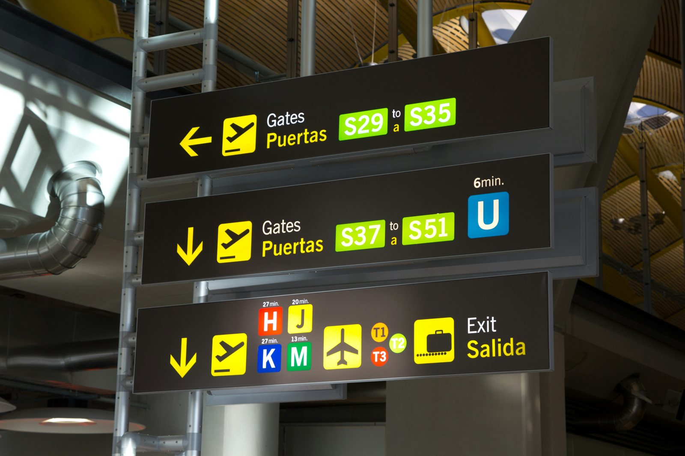
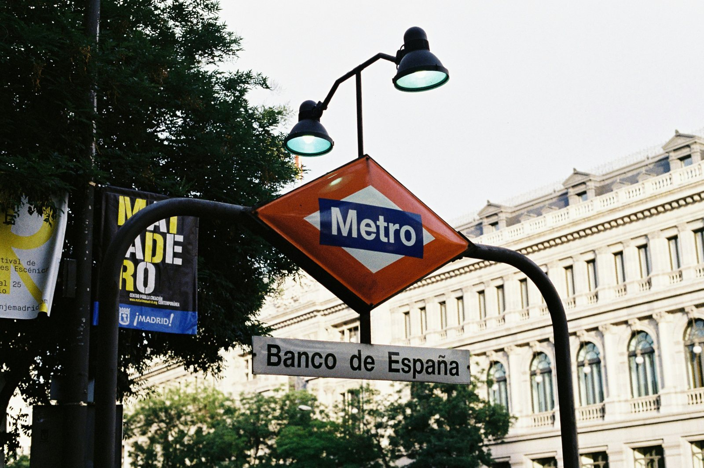
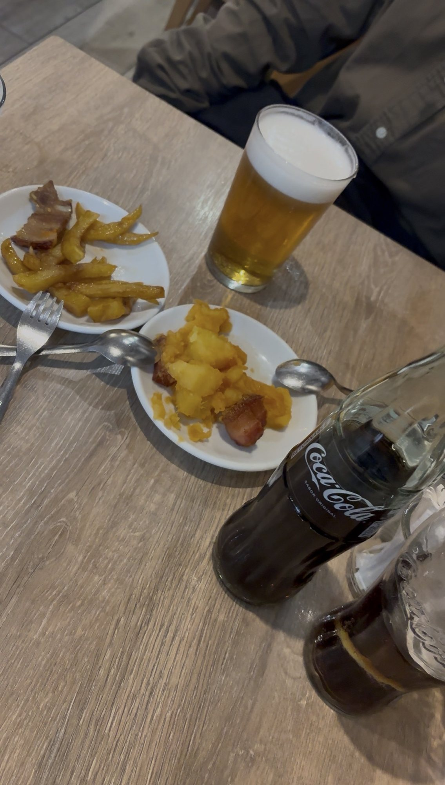
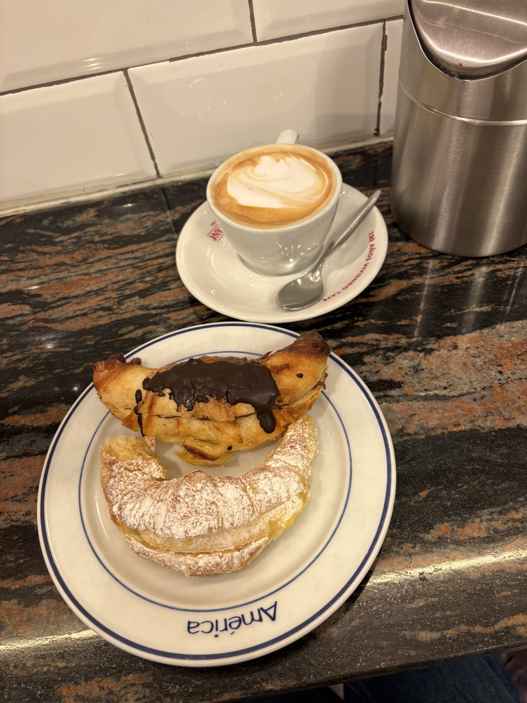
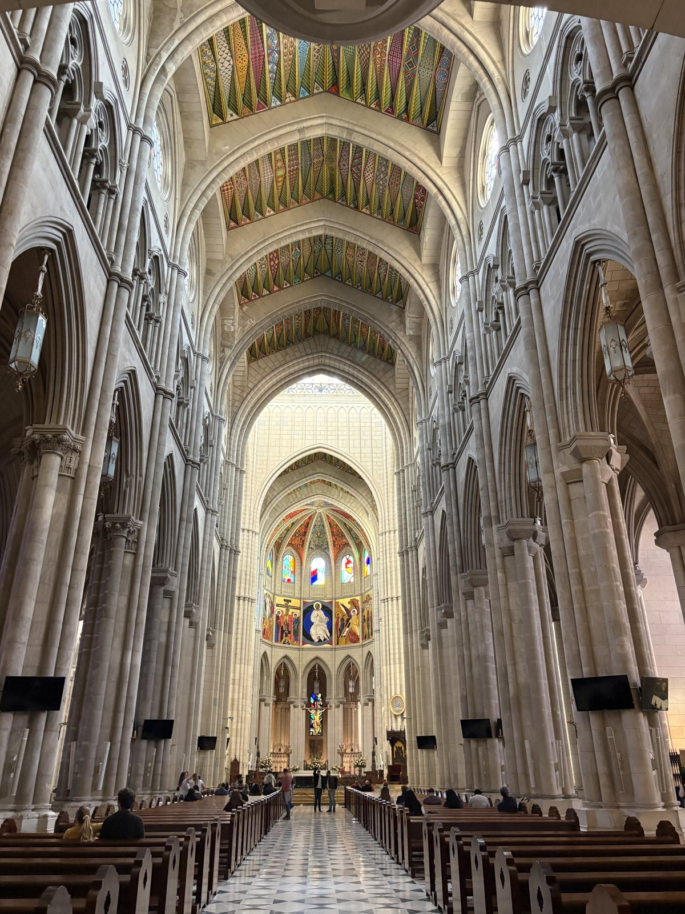
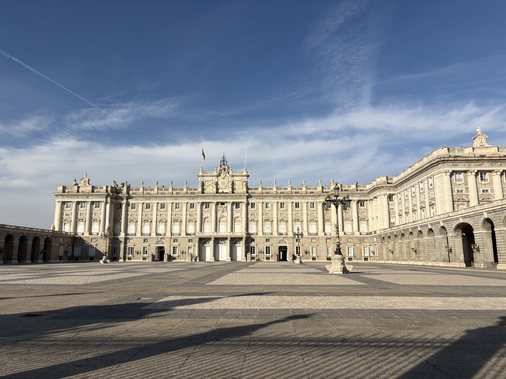
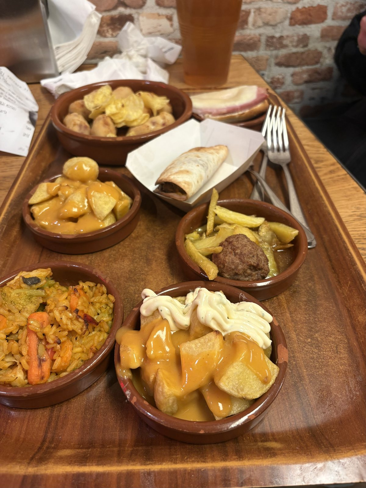
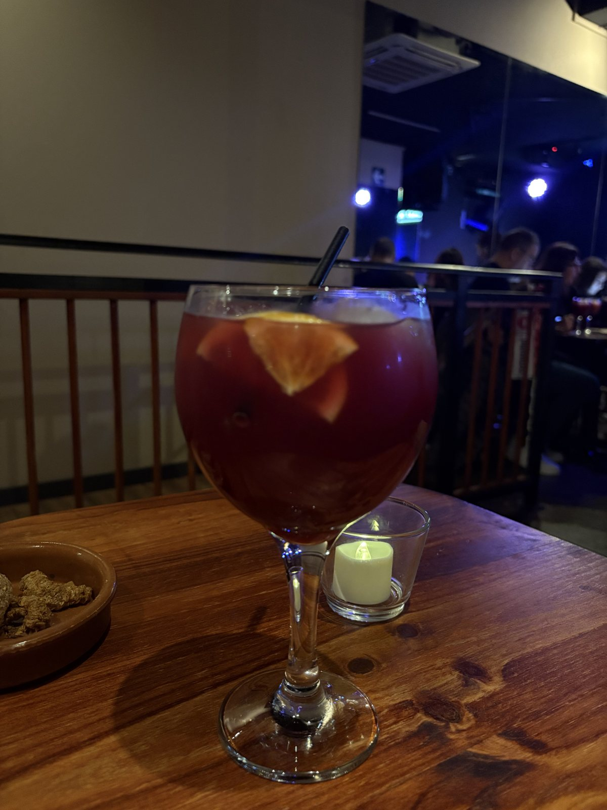

We flew from Dublin to Madrid on an early Ryanair flight and spent a full Friday exploring the city without spending much. Between a €3.50 drink and tapas, a free cathedral, and €1 glasses of beer or wine, Madrid turned out to be very easy on a student budget. Here's the whole day with time stamps, and what everything cost.
Note: All prices are from our trip, and some of the times are estimates. Prices can change, so check the latest before you go.
3:50 AM: Up and through security
We slept overnight in the arrivals area of Terminal 2 at Dublin Airport. I woke up at 3:50 AM to get through security and board our Ryanair flight, which departed at 5:55 AM. The flight took 2 hours and 45 minutes, and Madrid is one hour ahead of Dublin.
9:30 AM: Landing and getting into the city
We landed in Madrid at 9:30 AM on Friday.

Once we figured out Madrid's transit system, we took a bus into the city centre and arrived around 11 AM. We bought the 10-trip transit pass, which was more cost-effective than buying individual tickets.
Tip: Do the math before you buy single tickets. If you'll ride more than a few times, a multi-trip pass can cost less per ride.

11:15 AM: Hogar de Ávila (€3.50 per person)
Our first stop was Hogar de Ávila for a drink and tapas. It was only €3.50 per person for an alcoholic drink and a small plate of food, and the restaurant chooses the dish for you. We hung out there until about 12 PM.

12 PM: Wandering the city
We walked around and explored Madrid on foot until about 1:30 PM, which cost us nothing.
1:30 PM: América Confitería & Pastelería (under €5)
Calle de Atocha
We stopped here for coffee and a pastry. My order of two filled croissants and a latte came to under €5, and they charge less if you eat in. We also charged our phones and took a breather before heading back out.

Tip: Eat in if you can. The prices were lower at the table than to go.
2:30 PM: Almudena Cathedral (free)
We walked over to the Catedral de Santa María la Real de la Almudena. It was beautiful and completely free to enter. There's also a cute gift shop outside, which we browsed. The cathedral has a crypt too, but it was closed when we visited because of the siesta.

Tip: Siesta hours can close smaller sights in the middle of the afternoon. If you want to see the crypt, check the opening times first.
3:45 PM: The Royal Palace of Madrid
We checked out the Royal Palace of Madrid and took some photos. This is a very touristy area, so beware of pickpockets and keep your bags zipped and close.

4:15 PM: Metro to the Airbnb
We took the metro to our Airbnb and arrived around 5 PM.
5 PM: Freshening up
We spent about an hour and a half freshening up and getting settled. Around 6:30 PM we headed out without our heavy backpacks to find dinner and drinks.
7:30 PM: La Paradita Tapas Bar (€1 to €2 per plate)
We arrived at La Paradita, and the tapas were very affordable at €1 to €2 for a small plate. We ordered a variety and shared them, and we left full. A small glass of beer or wine is only €1, and a litre of beer is just €5.
Tip: This place got very busy, so come a bit earlier to secure a spot. You can grab any table that's free, then order at the counter.

9:30 PM: Drinks at a local bar
We headed out for a few drinks at a local bar, then took the metro back to the Airbnb.

12 AM: Back at the Airbnb
We got back to the Airbnb around midnight, after a very full day.
Final Thoughts
This day started at 3:50 AM in Dublin Airport and ended at midnight in Madrid, and most of it cost very little. A €3.50 drink and tapas, a free cathedral, and tapas for €1 to €2 a plate left plenty of budget for the rest of the trip. Madrid is an easy city to enjoy on a student budget.
Have you been to Madrid, or are you planning a trip? Let me know your favourite budget tapas spots in the comments!